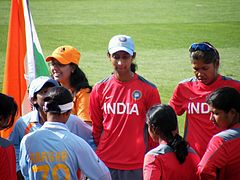

  
  <div class="container">
  <div class="row">
  <div class="col-md-1"></div>
  <div class="col-md-10 jumbotron">

  <h2>A Bit of more Sports.</h2>

  This page will give the readers stories and other stuffs related to their favorite sports and games. 
  asd
   <h3>The India women's national cricket team also known as Women in Blue represents the country of India in international women's cricket. One of eight teams competing in the ICC Women's Championship, the highest level of international women's cricket, the team is organised by the Board of Control for Cricket in India (BCCI).

India made its Test debut in 1976, against the West Indies, and its One Day International (ODI) debut at the 1978 World Cup, which it hosted. The team made the final of the 2005 World Cup, losing to Australia by 98 runs, and has made the semi-finals on three other occasions (in 1997, 2000, and 2009). India has also made the semi-finals of the World Twenty20 on two occasions (2009 and 2010), but is yet to progress any further in the tournament.</h3>
  </div>
<div class="col-md-1">
  asd</div>
